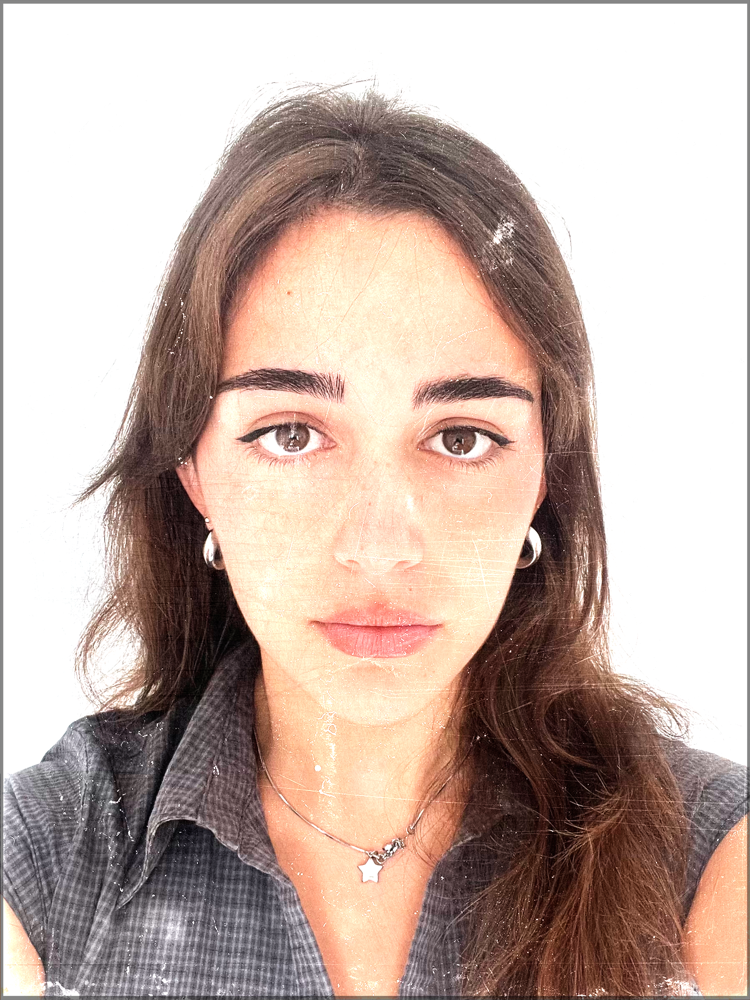

I’m a multidisciplinary creative working across film, editing, art direction and graphic design.
My practice moves between moving images, visual experimentation and image-making, with a particular interest in atmosphere, texture and the details that give each project its own identity.
I approach each project as a space to explore ideas, build worlds and tell stories through images. This portfolio is a personal archive of my work, collaborations and ongoing visual explorations.